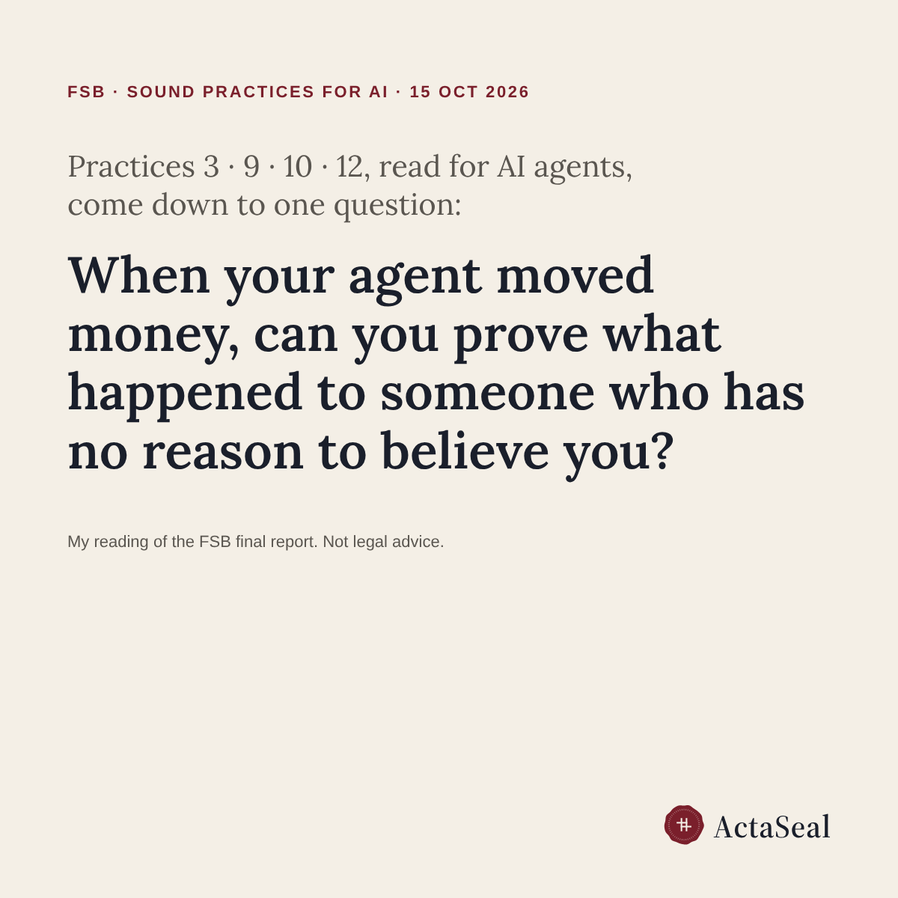

FSB's AI sound practices, read for AI agents that move money

On 15 October 2026 the Financial Stability Board published its final report, Sound Practices for Responsible Adoption of Artificial Intelligence: twelve practices that financial institutions are encouraged to consider.
The report is technology-neutral and mentions agentic AI only in its introduction. Read with AI agents in mind, four practices meet at one point:
- Practice 3 asks institutions to document their use of AI.
- Practice 9 asks them to evaluate AI performance in proportion to materiality and risk, including ongoing monitoring.
- Practice 10 asks for human oversight relevant to the materiality, risk, autonomy, complexity and explainability of each use case.
- Practice 12 asks them to manage risks from third-party AI, including transparency.
Once an agent can move money, all four come down to one question a bank will be asked by its board, its auditor or its regulator: when the agent acted, can you prove what happened to someone who has no reason to believe you?
Most teams would answer with their own logs. A log kept by the party being questioned is testimony, not proof.
This is a reading of the report, not legal advice, and it does not make any system compliant with anything.
Source: Financial Stability Board, Sound Practices for Responsible Adoption of Artificial Intelligence (AI): Final report, 15 October 2026. https://www.fsb.org/2026/10/sound-practices-for-responsible-adoption-of-artificial-intelligence-ai-final-report/